Cosmetic dentistryOdontología estética
- Teeth whiteningBlanqueamiento dental
- Porcelain veneersCarillas de porcelana
- Invisalign clear alignersAlineadores transparentes Invisalign
Family dentistry · Orlando, FL · Hablamos españolOdontología familiar · Orlando, FL · Hablamos español
Dr. A. Viviana Santos treats families at 5211 Curry Ford Road, from cleanings to implants, in English and Spanish. One dentist, every treatment, with options to fit your budget.La Dra. A. Viviana Santos atiende familias en 5211 Curry Ford Road, desde limpiezas hasta implantes, en español y en inglés. Una sola dentista, todos los tratamientos, con opciones para su presupuesto.
Four areas of care, one office. Each one is explained in full on the services page.Cuatro áreas de atención, un solo consultorio. Cada una se explica completa en la página de servicios.
About an hour. Each part of the bar is as long as that step takes.Alrededor de una hora. Cada parte de la barra dura lo que dura esa etapa.
FirstPrimero Dr. Santos looks at every tooth and your gums, and takes photographs.la Dra. Santos revisa cada diente y sus encías, y toma fotografías.
ThenLuego digital X‑rays, at a fraction of the old dose.radiografías digitales, con una fracción de la dosis de antes.
ThenDespués she lays out more than one treatment plan, with what each one costs.le presenta más de un plan de tratamiento, con lo que cuesta cada uno.
LastAl final you choose. Nothing starts until you say so.usted decide. Nada empieza hasta que usted lo diga.
Born in Bogotá, Colombia, Dr. Santos graduated from El Bosque University in 1996, moved to Florida in 1999 and completed the IEDP program at the University of Florida. She treats children and adults, from a first filling to complex implant, restorative and cosmetic cases.Nacida en Bogotá, Colombia, la Dra. Santos se graduó en la Universidad El Bosque en 1996, se mudó a Florida en 1999 y completó el programa IEDP de la Universidad de Florida. Atiende niños y adultos, desde un primer empaste hasta casos complejos de implantes, restauración y estética.
Member of the American Dental Association, the Florida Dental Association and the Central District Dental Association.Miembro de la American Dental Association, la Florida Dental Association y la Central District Dental Association.
Her storySu historia“Dr. Santos is kind and caring with a delicate touch, and simply outstanding results. I couldn’t recommend her highly enough! 10 out of 10 for sure!”“La Dra. Santos es amable y atenta, con un toque delicado, y resultados sencillamente extraordinarios. ¡No podría recomendarla más! 10 de 10, seguro.”
“From my first visit to Orlando Dental Care, I have felt at ease and very well cared for.”“Desde mi primera visita a Orlando Dental Care me he sentido tranquilo y muy bien atendido.”
“The best dental experience of my life.”“La mejor experiencia dental de mi vida.”
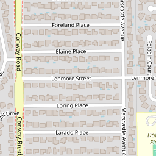
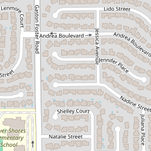
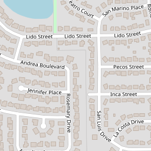
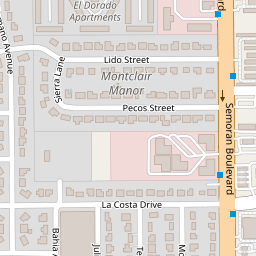
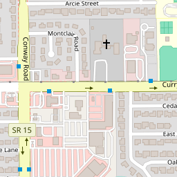
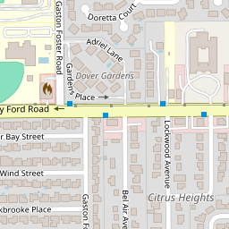
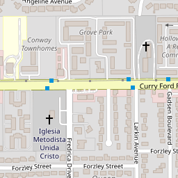
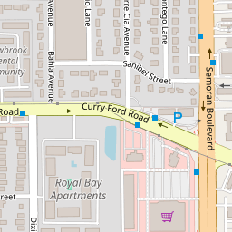
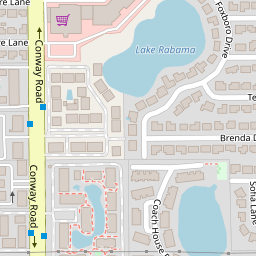
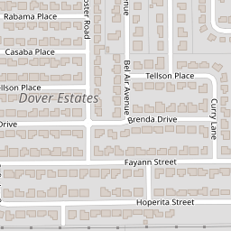
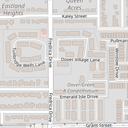
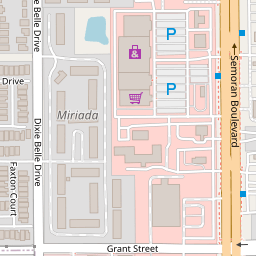